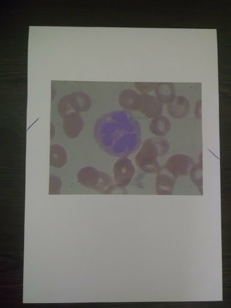
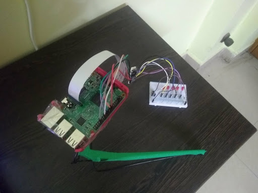
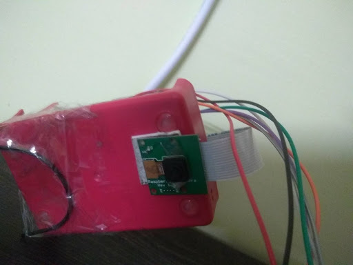
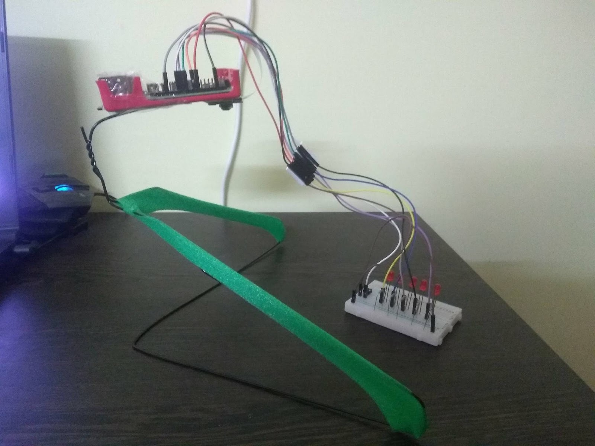
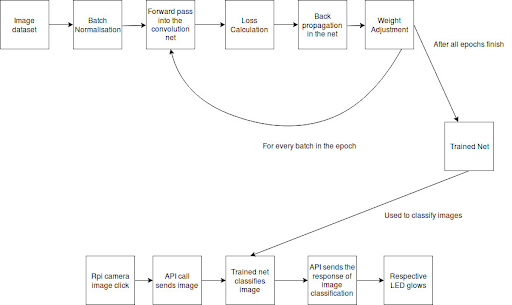

In the proposed work, field of deep
learning is being used to address the medical problem of cell
classification and differentiation at microscopic level. Present
study aims to build a device which can solve all the medical
techniques related to classification. Unlike devices like Coulter
Counter, the device proposed here is not purpose specific and can
easily be used with various classification problems including
White Blood Cell (WBC) classification. Using an appropriate
WBC image data set, a convolution network is trained. This
trained network is being utilized to detect the WBCs. In the
present assembly a hardware apparatus is set along with a
camera wherein the white blood cells are practically observed
by using the camera through this apparatus by sending the
observed data to the network via an Application Programming
Interface (API). This API brings about the required classification
and reports the results by depicting the output class. The
advantage of the current devise is the feature of universality,
where as soon as the trained net is changed the device starts
processing automatically and the data classification is done for a
medical problem entirely different from WBC detection. The
trained network for WBCs proved to be 88% efficient in
classifying them into correct categories. The automated solution
proposed has many benefits. Firstly, the cost of equipment is very
reasonable. Secondly, the product has a universal nature. The
API can easily be configured to address any medical technique
which involves image classification. Thus, a single device has an
extremely flexible structure. Thirdly, the over time efficiency
increases with increase in data.




